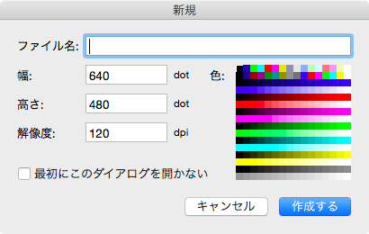

Start up
When the PoCo.app open In the first time, show like bellow screen shot.(when click image, show full-size.)
{kind=link}
In the first time, following certain sub-windows have opened:
- The Palette Window
- The Tool-bar Window
- The Pen-style and Tile-pattern Window
- The Layer Window
- The View Window
Besides, the dialogue panel of new image has opend. You can specify image size, file name and so on in order to create new image.
Note that, position of sub-windows and open of sub-windows are store into the UserDefaults. Hence, when the PoCo.app open in next time, such window position are same as previous position.
Positioning of Window
The Default status(position, opened) of sub-windows are dicided by the Copyrighter guess that normally use. And, the origin of sub-windows positon is left-top in nib-file.
Each window can not docking, sub-windows position is depend on your preference.(since sierra(macOS 10.12), window border snap is available as OS function.)
If you need, any sub-windows can be opened or closeed.
Note that any sub-windows can restrict move, when you want to fix sub windows position:see to Fixed sub windows position on the Pereferences panel.
The Dialogue Panel of New Image
The dialogue panel of new image will open when the PoCo.app open in the first time or select the menu.

Setting items of dialogue panel are following:
- The Name of Image(Also allow empty. When this field empty, apply default name.)
- The Number of dots for size of width(required)
- The Number of dots for size of height(required)
- The Resolution as known as DPI(required)
- Color at bottom layer(required)
- Do not open this dialogue
Choose either open or not open this dialogue when the PoCo.app launch in the next time.
When this box checked, do not open this dialogue in the next time.
When the button click after required field input, create new document as well as new main window opened, which you can edit new image.